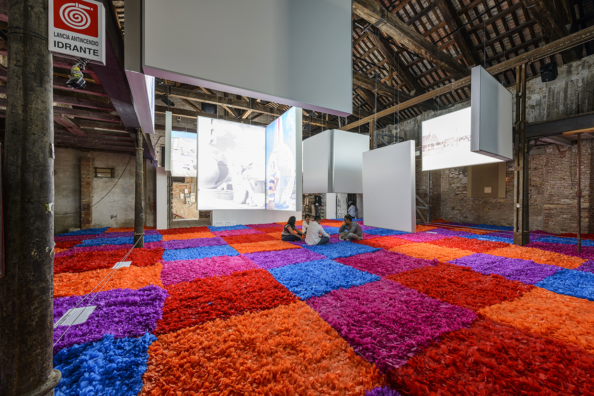

成都模特网2012年成立于成都，虽成立不久却以快速平稳发展的状态下在成都模特经纪产业居领导地位。旗下拥有上千人优质国内外模特，卓越的专业团队。其业务范围舞美设计、公关策划、品牌推广等。并提供相关服务:秀场编导、舞台设计搭建、走秀模特、平面模特，礼仪、摄影师、化妆师、服装师、外籍模特、外籍舞蹈、外籍乐队、演员/主持、影音宣传片制作等一气呵成的完善服务。是成都及四川省内首屈一指的经纪公司。
我们是什么？
我们专为促进模特产业而生，我们长期耕耘本土，期冀全新行业运作模式，推动模特圈变革。
我们创建时尚圈社交网,架构前所未有的开放平台。
品牌持有商、广告公司、品牌管理咨询公司、商业策划机构、模特公司、模特经纪、导演、制片、摄影机构、摄影师、造型师、传媒人、公关经理以及模特和艺人将在这里实现真正的融合。各种资源自由分享交流，互动无阻。
我们做什么？
我们坚信：没有人不喜欢新面孔！新的血液才有新的成长与突破。 每年我们都要折腾几位出来，从默默无闻到炙手可热。 如果你喜欢折腾，请抓紧时间联络我们！
不断挖掘、培训和推广新人，培养高品质模特及艺人是我们的日常作业。
在任何时候，我们都优先考虑模特利益， 我们尽可能为模特争取最大利益，模特的利益高于厂商。
希望我们的工作对模特协会和模特专业委员会有所帮助。 我们努力改善、提升和加强模特业在全国其他行业的影响力。

我们需要你！
由你开始，改变我们！我们需要你参与当下最伟大的革命！
把你所知道的信息分享给我们 有你的加入和分享才会有我们整个行业的前行。
改变模特行业的未来景愿,由你开启！ 我们是成都模特网(chengdumote.com)旗下的專業模特產業品牌，隸屬于成都模特网(chengdumote.com)。
成都模特网(chengdumote.com)成都第一时尚人才成长平台!，成都模特网(chengdumote.com)是中國最大演藝推廣公司之一，參與“中國國際時裝周”、“中國休閑博覽會”、“中博會”和“海峽兩岸紡織品博覽會”等時裝展會，備受廣泛好評。
在中國大陸擁有優秀的職業模特和一流的演藝人員，同時擁有強大的專業企劃隊伍和推廣機構，创构中國新時尚。
业务范畴:
1．各类车展、新闻发布会、产品推介会、产品展示会、招商会 2．各种活动开幕闭幕、项目开工竣工庆典、房地产开盘仪式； 3．大中型国际、国内会议、论坛、研讨会、经贸交流会、招商引资会、各种专业会展； 4．商务演艺公关活动和各种文化交流活动； 5．地方政府、企业、社团机构开展各种类型的宣传日、纪念日（周年庆典）、活动周等活动。